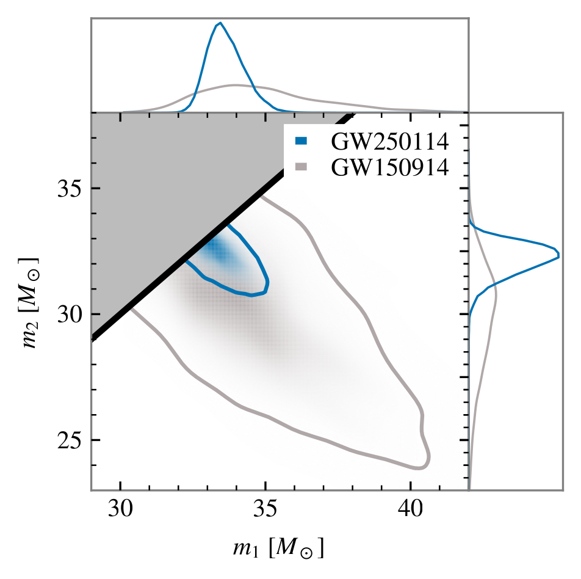
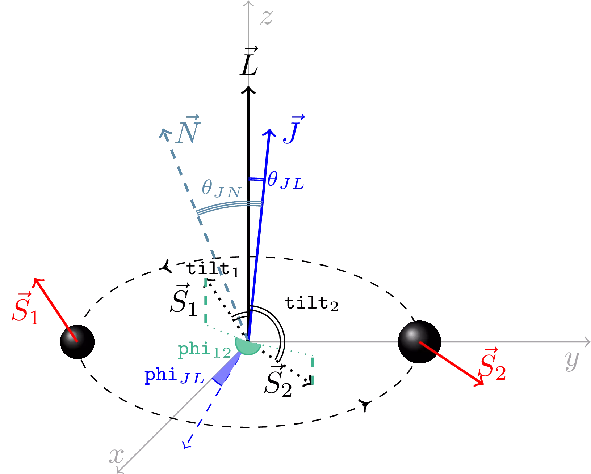
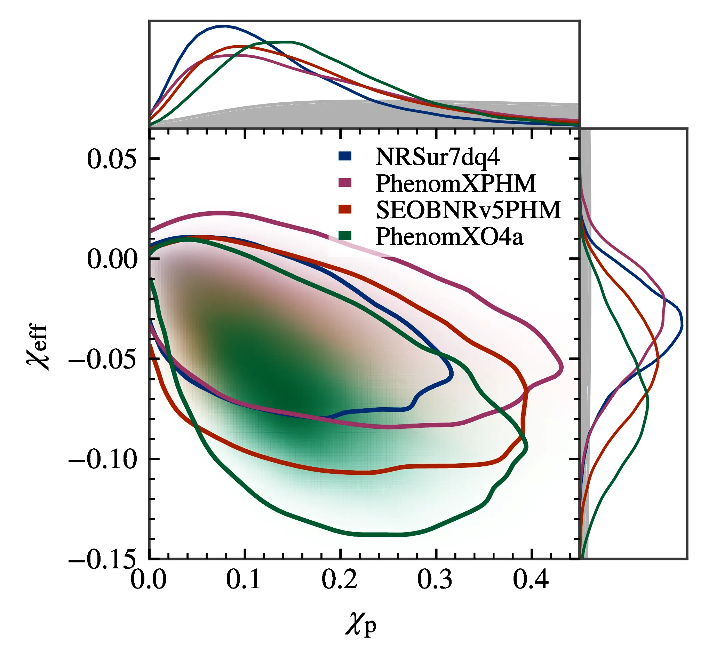
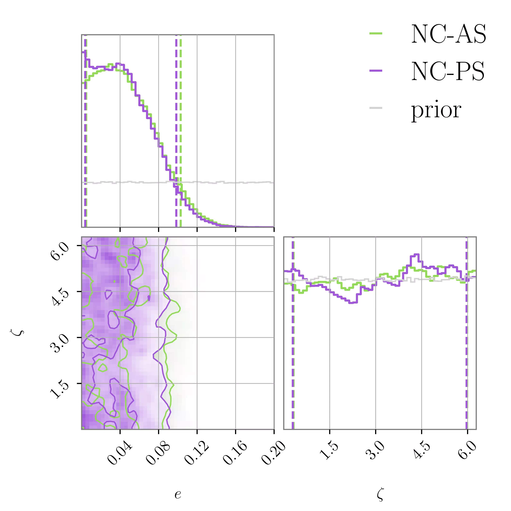
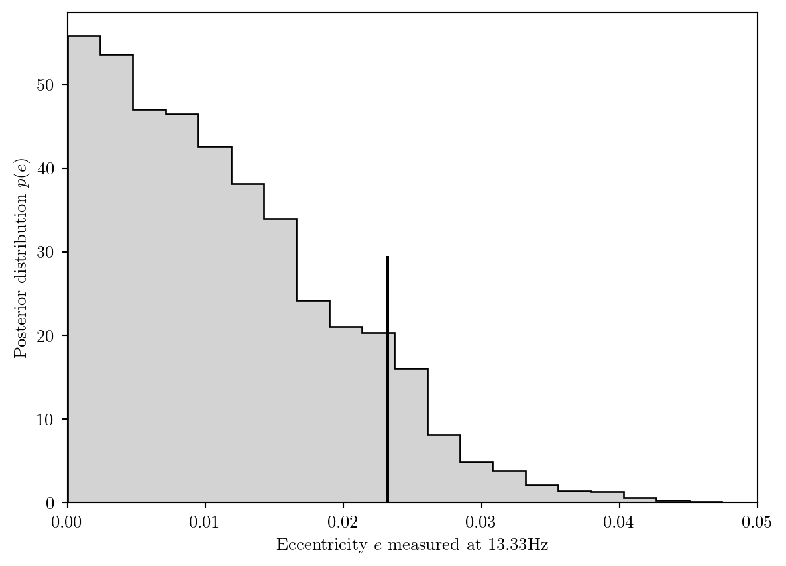
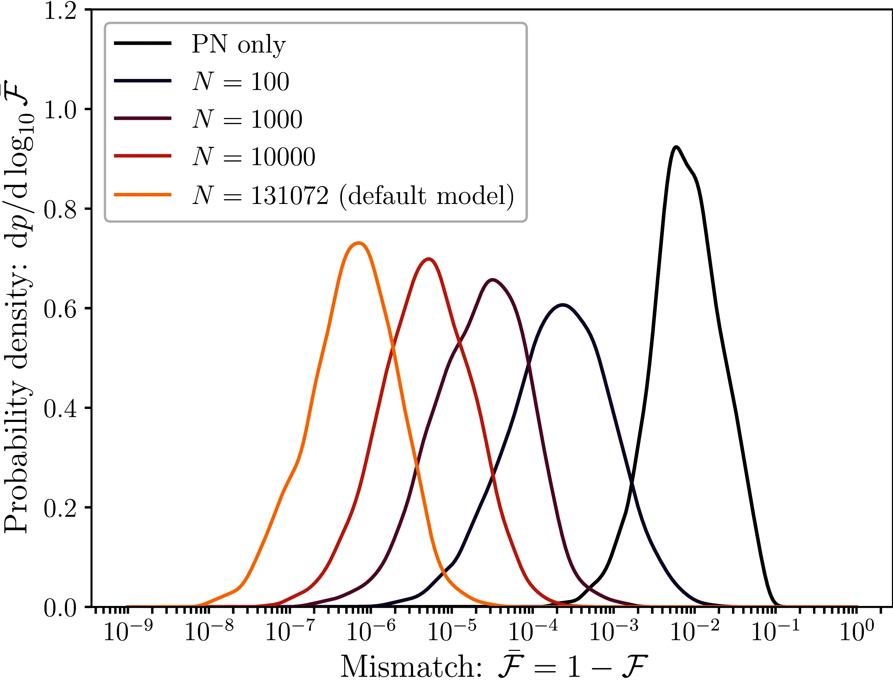
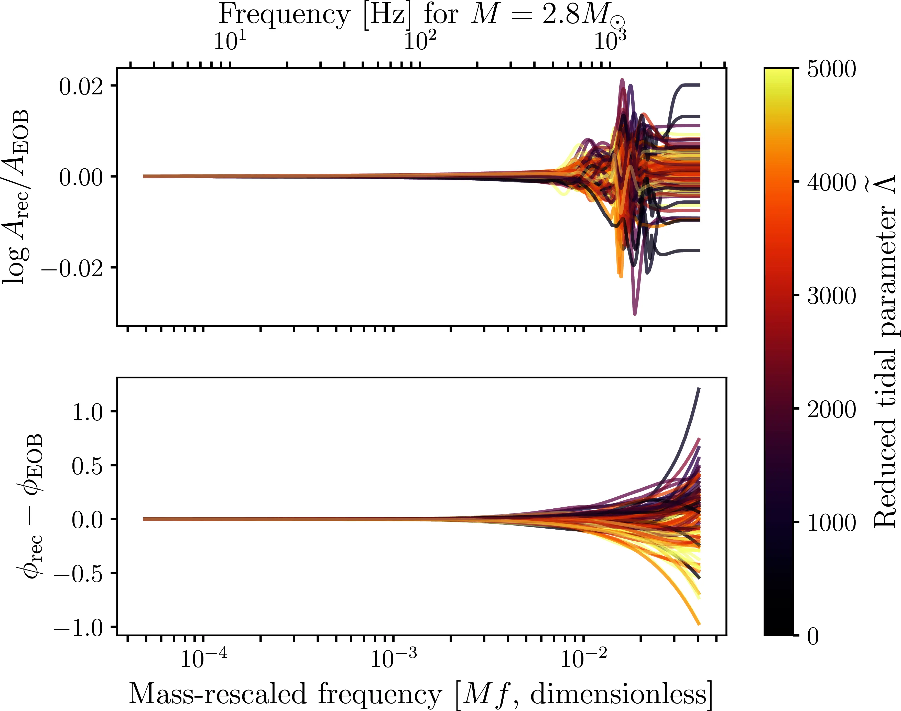
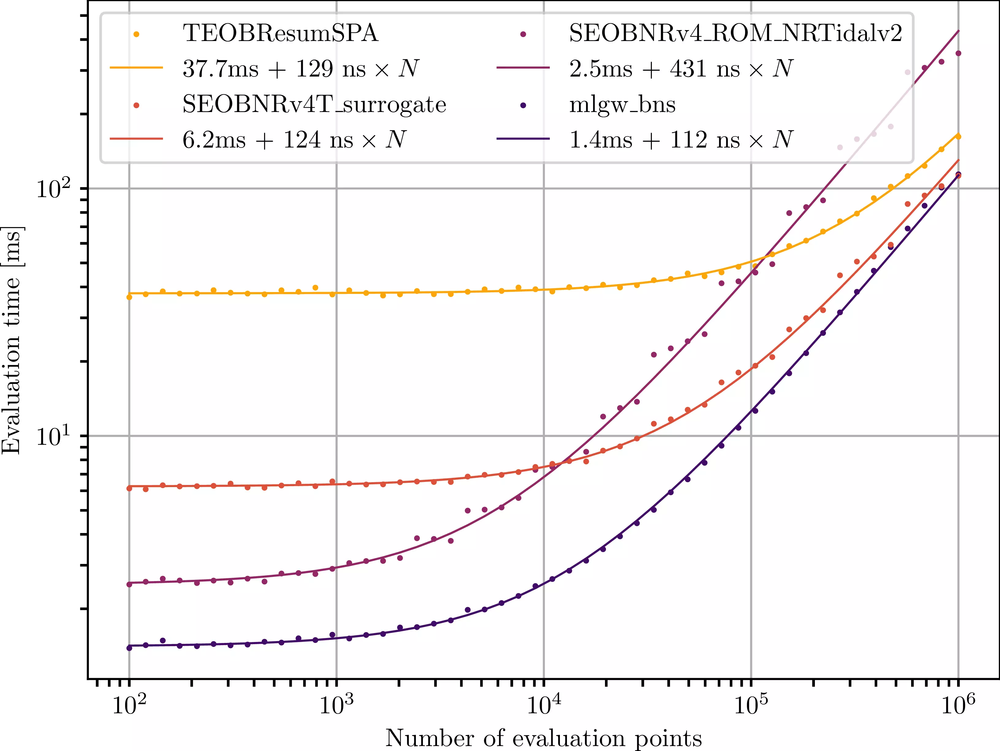

In this chapter we continue in the dissection of the gravitational signal emitted by the coalescence of two compact objects by considering its intrinsic parameters, those relating to the source itself and not to its relation to the observer.
This gravitational signal is often qualitatively decomposed into three sections: inspiral, merger and post-merger.
When the remnant is a black hole the post-merger is an exponentially damped ringdown, as described in Section 4.2; if this is not the case, the emission spectrum can become significantly less predictable and long-lived. Though efforts have been made toward modelling it—see e.g. (Breschi et al. 2019, 2022, 2024) for neutron star binaries—we will not discuss this in detail here.
The rest of this chapter mainly concerns the dependence of models for the inspiral on their parameters. Some of the ones we will consider are really only suitable for the early stages of inspiral, while others are accurate enough to describe the merger, and they can be smoothly connected to a model for the post-merger. When applied to black hole binaries, the result is an Inspiral-Merger-Ringdown (IMR) waveform model.
This chapter also contains a discussion of the results we presented in Tissino et al. (2023), regarding the construction and application of a fast frequency-domain surrogate for neutron star binaries, as well as the ones in Gamba et al. (2025), regarding a re-analysis of the GW150914 event with a waveform model accounting for both eccentricity and spin-precession.
5.1 Component masses
The two objects giving rise to the coalescence are labelled “primary” and “secondary” based on their masses, respectively \(m_{1}\) and \(m_{2}\) with \(m_{1}>m_{2}\). These masses are typically measured in units of the solar mass \(M_{\odot} \approx 1.99\times 10^{30} \text{kg}\).
Some common combinations of these include the total mass \(M = m_{1}+m_{2}\), the mass ratio \(q=m_{2} / m_{1} \leq 1\),1 the reduced mass \(\mu = m_{1} m_{2} / M\) and the symmetric mass ratio \(\nu = \mu / M = m_{1} m_{2} / M^{2}\).
1 Conventions for this parameter differ, with some authors using \(q=m_{1} / m_{2}>1\), but within BILBY, the standard piece of software for gravitational wave inference, it is defined to be less than 1 (Romero-Shaw et al. 2020).
The waveform at low frequencies is most affected by their combination called chirp mass\(\mathcal{M}\), which is defined as follows:
A general Post-Newtonian expression for the phase of a compact binary reads as follows (Abac et al. 2026, eq. 1.1): \[
\Psi(f) = 2 \pi f t_{c} - \phi_{c} - \frac{\pi}{4} + \frac{3}{128 \nu x^{5}} \left( 1+ \sum_{n=2}^{n _\text{max}} \left[ \varphi_{n} + \varphi_{n}^{(l)} \log x \right] x^{n}\right)\,.
\tag{5.1}\]
Here, the expansion parameter represents the velocity of the binary: \(x = v / c = (\pi M f)^{1 / 3}\). The chirp mass appears as a prefactor in Equation 5.1: \(\nu x^{5} = \nu (\pi M f)^{5/3} = (\pi \mathcal{M} f)^{5/3}\). This means it affects the phase evolution of the signal at a basic level, and its measurement will be precise if we can constrain a large number of signal cycles.
On the other hand, the Post-Newtonian coefficients \(\varphi_{n}\)2 contain information about various other contributions, such as mass ratio and spin (Blanchet 2024). For example, the symmetric mass ratio \(\nu\) enters in the expression at 1PN order, spin-orbit effects at 1.5PN, and spin-spin effects at 2PN.
2 A terminology note: the \(n\)-th term in the sum is called the \((n /2)\)PN contribution. For example, the \(n=5\) term is called 2.5PN.
5.1.1 The component masses of GW250114
This signal was quite similar to the first-ever detection, GW150914. The inferred masses of the component black holes were in fact compatible, and the distances were similar as well. However, due to the improvements in the detectors’ sensitivity over the decade between them, the precision in measurement is now significantly better. Figure 5.1 shows the posterior distribution on the component masses for these two events.

Figure 5.1: Posterior distribution on the component masses of GW250114. Adapted from Abac et al. (2025).
5.1.2 At lower frequencies
At very low frequencies we might expect to only be able to constrain the chirp mass, with a large uncertainty on the mass ratio and all other parameters appearing later in the Post-Newtonian expansion such as spin. While this is qualitatively true, an interesting observation (Toubiana et al. 2020) is that low frequency posterior distributions can still exhibit strong correlations between chirp mass and mass ratio.
If chirp mass were the only parameter allowed to vary, the frequency derivative of the signal \(\dot{f}\), or equivalently in the stationary phase approximation (SPA, see Section 6.2) the second derivative of the frequency-domain phase \(\Psi''\) in Equation 5.1, would be sufficient to constrain it. However, in general, fixing this frequency derivative will determine a surface — for example, a 1D curve in the \((\mathcal{M}, \nu)\) space, or a 2D surface in the \((\mathcal{M}, \nu, \chi _\text{eff})\) space.
Toubiana et al. (2020) show this curve in the \(\mathcal{M}, \nu\) plane, in the case of a stellar-mass black hole binary observed by LISA. Qualitatively, it is very “shallow”: a variation of \(\nu\) from 0.2 to 0.25 (a 25% increase) only corresponds to a variation in \(\mathcal{M}\) by \(10^{-3}M_{\odot}\) (a 0.003% increase). Nevertheless, the scale of the variation in chirp mass is comparable to typical uncertainties in this parameter obtained with long observations, and an anticorrelation between \(\mathcal{M}\) and \(\nu\) is systematically observed.
5.1.3 Prior distribution
Typically, sampling is performed in terms of the variables \(\mathcal{M}\) and \(q\), but the prior distribution is required to be uniform in the \((m_{1}, m_{2})\) plane. The equivalent distribution can then be obtained by computing the Jacobian of the transformation (Dupletsa et al. 2025): \[
\pi(\mathcal{M}, q) = \mathcal{M} \frac{(1+q)^{2/5}}{q^{6/5}}\,.
\]
When sampling, it is also important to identify which object is the primary and which is the secondary (Gerosa et al. 2025). The distinction would be well-specified if we had access to the exact masses of the objects, \(m_1\) and \(m_2\), but due to measurement error we do not: any given posterior sample will describe two objects with masses \(m_a\) and \(m_b\) and corresponding spins \(\vec{\chi}_a\) and \(\vec{\chi}_b\).
The current standard approach is to establish the correspondence \(a \iff 1\) and \(b \iff 2\) based on the criterion that \(m_a > m_b\), on a sample-by-sample basis. If the masses are well-distinguished (i.e. the mass ratio is considerable) this can be reliable, but for comparable masses and low SNRs it is prone to bias inference. A generic, nonparametric and non-data-driven labelling procedure is not currently available. A practical stopgap approach is to discuss results based on relabeling invariant parameters.
5.2 Spin and orbital angular momentum
In a generic binary with orbital angular momentum \(\vec{L}\), the component objects will have two spin vectors \(\vec{S}_{1,2}\). These three vectors will generally not be aligned, neither to each other nor with the observation direction \(\vec{N}\).3
3 In this section we shall use this letter for the observation direction to conform with the convention, though elsewhere we use \(m\).
In principle we could use Cartesian coordinates to describe these spins; however in gravitational wave analysis it is more convenient use the following decomposition:
\(a_{1} = \lvert \vec{S}_{1} \rvert / m_{1}^{2}\), the dimensionless magnitude of the primary object’s spin;
\(a_{2} = \lvert \vec{S}_{2} \rvert / m_{2}^{2}\), the dimensionless magnitude of the secondary object’s spin;
\(\theta_{1} = \arccos (\vec{S}_{1} \cdot \vec{L})\), the tilt angle between the orbital angular momentum and the primary object’s spin;
\(\theta_{2} = \arccos (\vec{S}_{2} \cdot \vec{L})\), the tilt angle between the orbital angular momentum and the secondary object’s spin;
\(\phi_{12} = \arccos(\vec{S}_{1}^{\parallel}\cdot \vec{S}_{2}^{\parallel})\), the azimuthal angle between the projections of the component spins in the orbital plane, \(\vec{S}_{i}^{\parallel} = \vec{S}_{i} - \vec{S}_{i} \cdot \hat{L}\);
\(\phi_{\text{JL}}\), the azimuthal angle of \(\vec{L}\), which parameterizes rotations around the \(\vec{J}\) axis.
These six parameters describe the two spin vectors in terms of their relation to the orbital angular momentum. The orientation of the total angular momentum is an extrinsic parameter, since it describes the geometric relation of the source and the observer: it is described by
\(\theta_{\text{JN}} = \arccos(\vec{J}\cdot \vec{N})\), the angle between the total angular momentum \(\vec{J}=\vec{L}+\vec{S}_{1}+\vec{S}_{2}\) and the observation direction \(\vec{N}\).
\(\phi_0\), the orbital phase, the azimuthal angle of the observation direction \(\vec{N}\) around the orbital angular momentum.
Also see Romero-Shaw et al. (2020) for the definitions of these parameters within BILBY.

Figure 5.2: Diagram of the angles involved in the description of generic spins, from Dupletsa et al. (2025).
Due to spin-induced precession, the orbital angular momentum \(\vec{L}\) and the spins \(\vec{S}\) are time-dependent. The total angular momentum \(\vec{J}\) is not exactly conserved for an inspiralling, spin-precessing binary (Boyle, Owen & Pfeiffer 2011), but we can consider a reference frame aligned to its value early in the evolution of the binary, \(\vec{J} = \lim_{ t \to -\infty }\vec{J}(t)\), so its angle with the observation direction \(\theta_{\text{JN}}\) is a well-defined parameter (Pratten et al. 2021). The magnitudes of the spins \(a_{i}\) are exactly conserved. The four remaining parameters — two tilts and two azimuthal angles — measurably evolve through spin-precession, and thus need to be specified at a given reference frequency.
The angle between orbital angular momentum and observation direction, or inclination angle, is denoted as \(\iota = \arccos(\vec{L}\cdot \vec{N})\). In the aligned-spin case it is constant and equal to \(\theta_{\text{JN}}\), but in general it is a time-dependent quantity.
The best-constrained spin-related quantity is generally the effective spin parameter \[
\chi _\text{eff} = \left(\frac{m_{1} \vec{\chi}_{1} + m_{2}\vec{\chi}_{2}}{m_{1}+m_{2}} \right) \cdot \hat{L}\,.
\]
The extent to which precessing spin affects a binary is often characterized through the precessing spin parameter \[
\chi_{p} = \max \left( \chi_{1}^{\perp}, q(3q+4) / (4q+3) \chi_{2}^{\perp} \right) \,,
\] where \(\chi_{i}^{\perp} = |a_{1} \sin(\theta_{i})|\) denotes the magnitude of the in-plane component of the spins.

Figure 5.3: Effective and precessing spin parameters for GW250114, from Abac et al. (2025).
In Figure 5.3 we show the posterior distribution on these parameters for GW250115, obtained with several different waveform approximants. Qualitatively, \(\chi_{\text{eff}}\) was slighty negative and \(\chi_p\) was small. The apparent decrease in posterior mass for \(\chi_p \to 0\) is an artefact of the prior used on the component spins (Section 5.2.1), whose distribution in terms of \(\chi_p\) is shown in grey: the data prefer small values of \(\chi_p\). Note how the scale of the plot for both components could in principle be extended to a magnitude of 1.
Modelling spin precession is generally accomplished through a change in reference frame: a waveform is obtained in a co-precessing frame, whose \(z\) axis is the orbital angular momentum, and then transformed to an inertial frame by means of a time-dependent transformation, which can efficiently be computed with a Post-Newtonian approximation. We give more details on the procedure in Section 6.1.1.3.
5.2.1 Prior distribution
The prior to adopt for spin variables is a matter of convention. Within BILBY(Romero-Shaw et al. 2020), it is defined so that the dimensionless spin magnitudes \(a_{i}\) are uniformly distributed in the range \([0, 0.99]\), while the spins are uniformly distributed on the sphere, meaning that \(\phi_{12}\), \(\phi_{JL}\), \(\cos \theta_{1}\), \(\cos \theta_{2}\) are uniformly distributed.
If one wishes to restrict sampling to the aligned-spin case only, care must be taken to use compatible priors: given a prior \(\pi(|\chi|)\) on the spin magnitude and a prior \(\pi(\cos\theta)\) on the cosine of the tilt, the equivalent prior on the aligned spin component \(\chi_z\) is \[
\pi(\chi_z) = \int_{0}^{1} \text{d}a \int_{-1}^{1} \text{d}\cos\theta
\left[ \pi(|\chi|) \pi(\cos\theta) \delta(\chi_z - |\chi| \cos\theta) \right]\,.
\]
If the prior on the spin magnitude \(\pi(|\chi|)\) is taken to be uniform in the range \([0, \chi_{\text{max}}]\), then the result of this integral is (Lange, O’Shaughnessy & Rizzo 2018, eq. A7):
In Newtonian gravity, the two-body problem is analytically solvable. The corresponding trajectories are all planar, and they can be expressed in polar coordinates as (Karttunen et al. 2017): \[
r = \frac{p}{1 + e\cos f}\,,
\] where \(f\) is a polar angle in the orbital plane, measured from the center of mass of the system, while \(r = |r_{1}-r_{2}|\) is the distance between the two objects. The motion of either body can easily be recovered from this equation: their position vectors measured from the center of mass will always have opposite signs, and magnitudes \(r_{1} = q r / (1+q)\) and \(r_{2} = r / (1+q)\), where \(q\) is the mass ratio. The constants of motion \(p\) and \(e\) are called semilatus rectum and eccentricity. The former has the dimensions of a length and it characterizes the orbit’s scale; the latter is a pure number, which determines the type of conic section the orbit describes:
\(e=0\) is a circular orbit;
\(0 < e< 1\) is an elliptical orbit;
\(e=1\) is a parabolic trajectory;
\(e>1\) is a hyperbolic trajectory.
Systems with \(e<1\) are bound, they repeat their motion and have negative total energy. Let us define some parameters for the elliptical case: the points \((x, y)\) of an ellipse with semimajor axis \(a\) and semiminor axis \(b\) obey \[\frac{x^2}{a^2} + \frac{y^2}{b^2} = 1\]
In terms of these variables, the eccentricity\(e\) is given by \(e^2 = 1- ( b / a)^2\), the focal distance\(c\) by \(c = \sqrt{ a^{2} - b^{2} }\), and the semilatus rectum\(p\) by \(p=a \sqrt{ 1-e^{2} }\).
We have previously used the true anomaly\(f\) as a polar angle: it is the angle from the periastron to the orbiting body, measured using the focus of the ellipse as the center. There are some other choices: the eccentric anomaly\(E\) is the angle from the periastron to the projection of the orbiting body onto the smallest circle containing the ellipse, measured using the center of the ellipse as the center. The mean anomaly\(M\) is an angle increasing proportionally to time from a periastron pass to the next.
Note 5.1: Converting between eccentric parameters
Mean anomaly and eccentric anomaly are related through Kepler’s equation, which is transcendental and therefore must be solved numerically if we want to compute \(E\) as a function of \(M\): \[M = E - e \sin E\]
True anomaly and eccentric anomaly are related through the equation: \[(1 - e) \tan^2(f/2) = (1+e) \tan^2(E/2)\]
but solving it is numerically unstable (the tangent diverges), so there is a better way (Broucke & Cefola 1973): define \(\beta = e / (1 + \sqrt(1-e^2))\), then \[f = E + 2 \text{atan2}(\beta \sin E, 1 - \beta \cos E)\]
where \(\text{atan2}(y, x) = \arctan( y / x)\) is the two-argument tangent function, which is also stable for \(x=0\).
Finally, one may close the circle of conversions with the following relation: \[M = \text{atan2}(-\sqrt{ 1-e^{2} \sin f }, -e - \cos f) + \pi -e \frac{\sqrt{ 1 - e^{2} } \sin f}{1+e \cos f}\]
Figure 5.4: The three anomalies for a generic orbit
They provide a useful starting point toward an understanding general-relativistic eccentric binaries, but their characteristics do not fully generalize: when gravity is strong eccentricity is not a constant of motion, nor is it covariantly defined; orbits are also not exactly elliptical, due to both perihelion precession and gravitational wave emission (Favata 2011).
Furthermore, the strict classification of Newtonian binaries breaks down in General Relativity: eccentricity decreases in a process known as circularization, and an unbound system can become bound if the gravitational wave emission during a hyperbolic encounter is enough to make its total energy negative.4
4 In GR this Newtonian condition should be phrased as: “make the total energy of the system \(E\) smaller than the sum of the rest masses of the components, \(M\).”
It is possible to define a notion of eccentricity based on the evolution of the emission frequency of the binary. This frequency is monotonic when the orbit is quasi-circular, while for eccentric orbits it exhibits peaks and troughs on the orbital timescale (Shaikh et al. 2023).
Within the TEOBResumS-DAlí waveform model (Albanesi et al. 2025, Bonino et al. 2022), eccentricity and relativistic anomaly are used as an initial condition for the EOB variables, which are then evolved with fully relativistic prescriptions (see also Section 5.5.2).
Gamba et al. (2025) performed a first-of-its-kind reanalysis of the event GW150914 with a model including both eccentricity and precessing spins. Beyond the regular 15 parameters describing a spin-precessing black hole binary,5 this analysis required two more: eccentricity and (true) anomaly. The constraints on these two parameters are shown in Figure 5.5.
5 For convenience we give the list here: 2 masses, 6 independent spin components, 7 extrinsic parameters (inclination \(\theta_{JN}\), phase \(\phi_{0}\), 2 sky coordinates, luminosity distance \(d_{L}\), polarization \(\psi\), time of coalescence \(t_{0}\).)

Figure 5.5: Eccentricity and true anomaly posterior for GW150914, from Gamba et al. (2025).
5.3.1 At lower frequencies
Most of the gravitational waves detected so far, in the audio band, have had no measurable eccentricity. GW250114 was one such example: parameter estimation performed with an eccentric waveform (Bonino et al. 2022) model prefers eccentricity values very close to zero, as measured at a reference frequency of 13.33Hz.6
6 This specific value was chosen to correspond to the start of the generated waveform in the time domain. The frequency band used for the analysis started from 20Hz, but the waveform needed to be started earlier in order to account for the contributions at 20Hz of the \(\ell=3\) modes, which appear at a frequency \(3/2\) times higher.
Figure 5.6 shows the posterior: the eccentricity is bounded to be lower than roughly 0.02.
Source code
from thesis_scripts import peters_evolutionfrom thesis_scripts import pltimport numpy as npfrom scipy.stats import gaussian_kdesamples = peters_evolution.get_gw250114_samples()ecc = samples['eccentricity']plt.hist(ecc, density=True, histtype='step', bins=20, color='black')plt.hist(ecc, density=True, bins=20, color='lightgrey')plt.axvline(np.quantile(ecc, 0.9), ymin=0, ymax=0.5, color='black')plt.xlabel('Eccentricity $e$ measured at 13.33Hz')plt.ylabel('Posterior distribution $p(e)$')plt.xlim(0, 0.05)plt.show()

Figure 5.6: Eccentricity posterior distribution for GW250114. A vertical line shows the location of the 90% upper limit on eccentricity.
Despite this being the best constraint on the eccentricity of a black hole binary merger to date, based on this observation alone we cannot exclude the possibility that this binary had significant eccentricity at lower frequencies. Figure 5.7 shows the posterior distribution for GW250114 evolved backward in time. This is done with a simple Post-Newtonian approach, namely Peters’ equations (Maggiore 2007, Peters & Mathews 1963), as it only serves to illustrate the point. It would be possible to also account for the impact of spin-precession, as described by Fumagalli et al. (2024).
Figure 5.7: Backward-extrapolated eccentricity evolution for GW250114.
While the limits and analysis quoted in the discovery paper (Abac et al. 2025) used a uniform prior in \(e_{13.33\text{Hz}}\), a conservative choice, we also show results obtained with a log-uniform prior \(p(e_{13.33\text{Hz}}) \propto 1/e_{13.33\text{Hz}}\). The qualitative scenario is similar in both cases: eccentricities on the order of \(e \sim 0.5\) are plausible in the deci-hertz band. However, the prior significantly affects whether these lie on the edge of the distribution or along its bulk.
This is not surprising: the data is not very informative on the \(e_{13.33\text{Hz}} \sim 0\) tail of the distribution, so we get back out of the analysis the assumptions we started with. This result can lead us to reflect on the meaning of the prior on eccentricity: a flat distribution in \(e_{13.33\text{Hz}}\) is not a neutral statement, but instead one which heavily favors eccentric binaries at lower frequencies. For an in-depth discussion of this effect, as well as an exploration of how one might use astrophysically-motivated priors instead, see Clarke et al. (2026).
5.4 Tidal parameters
Objects such as neutron stars can be deformed by the tidal gravitational field caused by the presence of a nearby object, such as the binary companion. This deformation enhances the gravitational attraction between the two objects, but it is only effective at relatively short separations: the net effect, therefore, is to leave the early inspiral almost unchanged, while accelerating its late stages.
In the static case, this tidal field can be expressed as \(\mathcal{E}_{ij}=C_{0i0j}\), where \(C\) is the Weyl curvature tensor (Misner, Thorne & Wheeler 1973, eq. 13.50), the trace-free component of the Riemann curvature tensor. At leading order, this tidal field will induce a quadrupole moment \(Q_{ij}\), given by
\[
Q_{ij} = - \Lambda M^{5} \mathcal{E}_{ij}
\]
where \(\Lambda\) is the tidal deformability or polarizability parameter, written as
where \(R\) is the radius of the object, while \(\kappa_{2}\) is its \(\ell=2\) dimensionless tidal Love number, which for neutron stars is generally on the order of 0.1.
The main tidal contribution to the waveform is through the effective tidal parameter, which enters the expansion at 5PN order (Wade et al. 2014): \[
\tilde{\Lambda} = \frac{8}{13} \left[
(1+7\nu -31\nu^{2}) (\Lambda_{1}+\Lambda_{2})
+\sqrt{ 1-4\nu } (1+9\nu-11\nu^{2})(\Lambda_{1}-\Lambda_{2})
\right]
\] while secondary contributions arise depending on the tidal deviation parameter \[
\begin{aligned}
\delta \tilde{\Lambda} = \frac{1}{2} \bigg[
&\sqrt{ 1-4\nu } \left( 1 - \frac{13272}{1319}\nu +
\frac{8944}{1319}\nu^{2} \right) (\Lambda_{1}+\Lambda_{2})
\\
&+ \left(
1- \frac{15910}{1319}\nu + \frac{3380}{1319}\nu^{2}
\right)
(\Lambda_{1}-\Lambda_{2})
\bigg]\,.
\end{aligned}
\] While their expressions are intimidating, note that several terms vanish in the equal-mass case, where \(\nu = 1 / 4\); if that is true then \(\tilde{\Lambda} =f(\nu) (\Lambda_{1}+\Lambda_{2})\) and \(\delta \tilde{\Lambda} = g(\nu)(\Lambda_{1}-\Lambda_{2})\) for some functions \(f\) and \(g\). Furthermore, if the masses are equal and so are the tidal parameters (\(\Lambda_{1}=\Lambda_{2}=\Lambda\)), then we have \(\Lambda = \tilde{\Lambda}\) and \(\delta \tilde{\Lambda} =0\).
The analysis so far has focused on the adiabatic, quadrupolar case: assuming that only the dominant oscillation mode of a neutron star is excited, and that its time evolution follows the forcing term (i.e. the other star’s tidal field).
In reality, the tidal deformation of a neutron star is more accurately described through a decomposition including the time-dependent excitation of different modes. There are several modes of oscillation one might consider, which have been deeply discussed in the field of astroseismology, (Cunha et al. 2007, Steinhoff et al. 2021, Zhao & Lattimer 2022), and a full discussion of them is beyond the scope of this work. The amplitude \(Q_n\) of each of these modes, which we index with an integer \(n\), will oscillate following a driven harmonic oscillator (Lai 1994) in the form
for some values of the dissipative timescale \(t_{\text{diss}}\) and angular frequency \(\omega_n\). The forcing term \(f_n\) will generally depend on the relative position of the companion star. In the quasi-circular case this can be approximated as a sinusoid whose period scales inversely with the angular frequency of the binary \(\omega_{\text{orb}}\), but for eccentric binaries high-frequency modes may be excited even though the orbit-averaged angular frequency is comparatively low.
The adiabatic assumption is equivalent to the requirement that \(1/t_{\text{diss}} \ll \bar{\omega}_{\text{orb}}\), as well as \(\omega_n \gg \bar{\omega}_{\text{orb}}\)(Flanagan & Hinderer 2008). The first constraint is generally expected to be well-satisfied, both when discussing losses dueto gravitational wave emission (Takátsy, Kocsis & Kovács 2024) as well as due to friction (Ripley et al. 2024).
Relaxing the \(\omega_n \gg \bar{\omega}_{\text{orb}}\) assumption means considering the effect of dynamical (also known as resonant) tides. These can impact the phasing at low frequencies, especially in the case of eccentric binaries (Gamba & Bernuzzi 2023). Considering oscillations with angular structure at higher orders than the quadrupole is also possible (Jimenez-Forteza et al. 2018) In any case, none of these higher-order corrections are required to explain current observations of neutron star mergers: the clearest to date, GW170817, only provided comparatively weak constraints on the leading-order tidal parameters \(\Lambda\)(Collaboration et al. 2019).
Love numbers are generally expected to vanish for black holes, and to be nonzero for other compact objects such as neutron stars. GW250114 provided an opportunity to test this prediction: if it had a measurable deviation from \(\tilde{\Lambda}=0\), it would have indicated a potential violation of General Relativity or some other missing aspect in our description of this binary, such as the components not being black holes but other compact objects. Andrés-Carcasona & Santoro (2025) have shown this not to be the case within current experimental uncertainties, constraining \(\tilde{\Lambda}\) to be less than 155 (with uniform priors) or 35 (with log-uniform priors) for this event.
5.5 Waveform modelling
General relativity is a complex non-linear theory, and in order to analyze signals from binaries with strong gravity we must understand its predictions precisely, and be able to compute them quickly.
There are several approaches to modelling the waveform emitted by a compact binary inspiral, with varying degrees of computational complexity, completeness in the inclusion of physical effects, and accuracy. For example, while all the approaches discussed here can in principle include any amount of modes in the spherical harmonic decomposition of binary emission (see Section 6.1.1), some specific models only include the dominant one.
Often, these approaches are calibrated or validated against full Numerical Relativity simulations. These have been possible for around 20 years as of this writing (Gourgoulhon 2007, Pretorius 2005), and despite being a gold standard suffer from their own set of uncertainties.
Gravitational waves can be extracted from them based on the Weyl scalar \(\Psi_4 = C_{abcd} m^a m^b n^c n^d\), where \(m\) and \(n\) are component vectors of a null tetrad while \(C\) is the Weyl tensor. At large separations from the binary, this is related to the gravitational time-domain polarizations \(h_+ - i h_\times\) by
\[ -\Psi_4 = \ddot{h}_+ - i \ddot{h}_\times\,,
\]
so this scalar must be computed at the edges of the simulation, integrated twice in the time variable, and then decomposed into spherical harmonics (Löffler et al. 2012).
We will focus on the Post-Newtonian (Section 5.5.1) and Effective One Body (Section 5.5.2) approaches to waveform generation; we also note the existence of Numerical Relativity surrogates (e.g.NRSur7dq4, presented by Varma et al. (2019)) and phenomenological models (e.g.IMRPHenomXHM, presented by García-Quirós et al. (2020)) for comparable mass binaries, and the gravitational self-force formalism for extreme mass ratios (e.g. the second-order self-force calculations presented by Pound et al. (2020) and implemented in the Fast EMRI Waveforms software package (Katz et al. 2021)).
5.5.1 Post-Newtonian
Post-Newtonian waveforms are obtained by analytically expanding Einstein’s equations in powers of \(v/c\). Thanks to the stationary phase approximation, this can lead to an analytical expression for the amplitude and phase as a function of frequency.
These models are generally only accurate for a description of the early inspiral.
Buonanno et al. (2009) give a comparison of some commonly used Post-Newtonian waveform approximants, including the frequency-domain one TaylorF2, whose frequency-domain waveforms read (Messina et al. 2019): \[
\tilde{h}(f) = \sqrt{ \frac{5}{24} }\frac{c}{\pi^{2/3} d_{L}}
\left( \frac{G\mathcal{M}}{c^{3}} \right)^{5/6} f^{-7/6}
\left( 1 + \sum_{n=2}^{n_\text{max}} A_{n} \left( \pi M f \right) ^{n}
\right) e^{i \Psi(f)}\,,
\] where the phase \(\Psi\) is in the form reported in Equation 5.1.
Post-Newtonian approximants including eccentricity also exist, though their validity is limited to the small-eccentricity regime.
5.5.2 Effective One Body
Effective One Body waveforms are obtained by mapping the relativistic two body problem to the motion of a test particle in a deformed metric. The following description will mainly describe the components of the TEOBResumS family of models, though similar considerations also apply to other models, such as those in the SEOB family.
The problem is described in a Hamiltonian setting, in terms of the dimensionless variables \((r, p_{r}, \varphi, p_{\varphi})\), which are rescaled relative polar coordinates in the orbital plane.
The effective Hamiltonian of the problem is given by (Nagar et al. 2018): \[
\hat{H} = \frac{H}{\mu} = \frac{1}{\nu} \sqrt{ 1 + 2 \nu (\hat{H}_\text{eff} - 1) }
\] where the effective Hamiltonian contains a plethora of physical effects and Post-Newtonian contributions. For the TEOBResumS model, it is given by \[
\hat{H}_{\text{eff}} = \sqrt{ p_{r_{*}}^{2} + A \left( 1 + \frac{p_\varphi^{2}}{r_c^{2}} + 2 \nu (4-3\nu) \frac{p_{r_{*}}^{4}}{r_{c}^{2}} \right) }
+ p_{\varphi}(G_{S} \hat{S} + G_{S_{*}}\hat{S}_{*})\,,
\] where the following quantities appear:
the potential \(A\) is a generalization of the \(1 - 2 GM / r c^{2}\) term in the Schwarzschild metric, which can also include corrections due to e.g. tidal effects; though it does not explicitly feature here, the Hamiltonian also depends on the \(B\) potential, which at leading order reads \(1 + 2 GM / r c^{2}\);
the radial momentum \(p_{r_{*}}\) expressed with respect to the tortoise coordinate \(r_{*} = \int \sqrt{ B /A } \text{d}r\);
the centrifugal radius \(r_{c}\), introduced in Damour & Nagar (2014);
a spin term, which depends on the variables \(\hat{S} = (S_{1} + S_{2}) / M^{2}\) and \(\hat{S}_{*} = ( q S_{1} + S_{2} / q) /M^{2}\);
The potentials \(A\) and \(B\) are computed with Padé resummation in order to improve stability where the Taylor approximant would diverge.
Since we are working within General Relativity the equations of motion are not conservative: they include radiation reaction terms which affect the evolution of the momenta. These terms also need to be computed to high order and Padé-resummed.
Note 5.2: Padé approximation
A \((n, m)\) Padé approximant (Padé 1892) to a function \(f(x)\) is a ratio of polynomials, in the form: \[
P_m^n(x) = \frac{\sum _{i=0}^{n} a_{i} x^{i}}{1+\sum _{i=1}^{m} b_{i} x^{i}},
\]
where the coefficients are determined such that they agree with the Taylor series: \[
\frac{\text{d}^{r}}{\text{d}x^{r}} f(0) = \frac{\text{d}^{r}}{\text{d}x^{r}} P_{m}^{n} (0)
\] for all \(r \leq n+m\). In fact, a Taylor series is a special case of a Padé approximant with \(m=0\).
One advantage of using Padé approximants is that, for large values of \(x\), they have a lower asymptotic order, and thus tend towards less “extreme” behavior, as Figure 5.8 shows.
Figure 5.8: A Padé approximant for the sine function. Even when the approximation breaks down, the Padé approximant outputs values somewhat close to those of the actual function, while the Taylor series quickly diverges.
The waveform obtained by computing a solution to the EOB dynamics is then completed with corrections for the “plunge” regime (Damour & Nagar 2007), and — for black hole binaries — a smooth connection to the ringdown (Damour 2008), which is modelled as a superposition of quasi-normal modes as described in Section 4.2. The treatment for the post-merger regime of other compact objects such as neutron stars is significantly more complex, as the phenomenology is much more variable and not currently constrained by observational data. Nevertheless, approaches have been proposed to handle it (Breschi et al. 2022).
A numerical solution to the EOB evolution equations is not always necessary: Nagar & Rettegno (2019) showed that a post-adiabatic approximation allows for the analytic solution to these equations. Gamba, Bernuzzi & Nagar (2020) further applied a stationary phase approximation (SPA, see Section 6.2) to these waveforms, allowing for direct generation in the frequency domain.
The SPA approach is not always feasible: for example, eccentric-hyperbolic binaries do not satisfy the requirements for the SPA, and their waveforms need to be computed in the time domain (Gamba et al. 2025, Nagar et al. 2024).
The EOB approach is also amenable to being extended with beyond-GR parameters, see e.g. Chiaramello et al. (2025).
5.5.3 Surrogate models: the mlgw_bns example
The evaluation of gravitational waveform models is commonly a bottleneck for the likelihood, therefore significant efforts have been devoted to the development of surrogate models, which reproduce the results from a computationally expensive model.
As an example, we show results from mlgw_bns(Tissino et al. 2023), a surrogate of the frequency-domain inspiral-only model TEOBResumSPA(Gamba, Bernuzzi & Nagar 2020) for aligned-spin neutron star binaries with tidal effects — a 5-dimensional parameter space, with parameters \((q, \chi_1, \chi_2, \Lambda_1, \Lambda_2)\), since all other parameters can be modeled analytically.
As a surrogate, it is trained on the base model, which can be evaluated at arbitrary points in the parameter space. The surrogate’s accuracy depends on the number of training data points, and it is measured in terms of the mismatch \[
\bar{\mathcal{F}} = 1 - \max_{t_{0}, \phi_{0}} \frac{(h_\text{true}| h _\text{surr}(t_0, \phi_0))}{\sqrt{ (h _\text{true}| h _\text{true}) (h _\text{surr}| h _\text{surr})}}
\tag{5.4}\] where the scalar products are computed as in equation Equation 3.3, and generally maximized over reference time and coalescence phase — this is equivalent to allowing the surrogate model to have a different parameterization for timing and phase than its baseline. This is generally acceptable, since timing and phase have no astrophysical meaning.

Figure 5.9: Reconstruction accuracy for mlgw_bns as a function of the number of training waveforms N.
Whereas the mismatch is a global metric, reconstruction accuracy can also be locally measured by directly comparing the predictions with those of the base model. We show this in Figure 5.10: the high accuracy achieved at low frequencies is by construction, as the model is constructed by incorporating an analytic Post-Newtonian baseline and only fitting the residual error.

Figure 5.10: Reconstruction accuracy for mlgw_bns in the frequency domain.
The surrogate model should also be faster to evaluate: this is indeed the case, as Figure 5.11 shows. The number of grid points in frequency has a significant impact on the evaluation time for all models, as is inevitable given the increased number of floating point operations. Therefore, we separate out the constant-time contribution to the evaluation time from the one scaling with the number of grid points.

Figure 5.11: Evaluation time for mlgw_bns compared to its reference model TEOBResumSPA and some others. For every model, we also show a fit of the waveform evaluation time \(t\) with a linear function of the number of frequency grid points \(N\), so that \(t = a + bN\).
Albanesi S, Gamba R, Bernuzzi S, Fontbuté J, Gonzalez A, Nagar A. 2025. Effective-one-body modeling for generic compact binaries with arbitrary orbits. http://arxiv.org/abs/2503.14580
Andrés-Carcasona M, Santoro GC. 2025. No Love for black holes: Tightest constraints on tidal Love numbers of black holes from GW250114. http://arxiv.org/abs/2512.01918
Bonino A, Gamba R, Schmidt P, Nagar A, Pratten G, et al. 2022. Inferring eccentricity evolution from observations of coalescing binary black holes. http://arxiv.org/abs/2207.10474
Breschi M, Gamba R, Borhanian S, Carullo G, Bernuzzi S. 2022. Kilohertz Gravitational Waves from Binary Neutron Star Mergers: Inference of Postmerger Signals with the Einstein Telescope. http://arxiv.org/abs/2205.09979